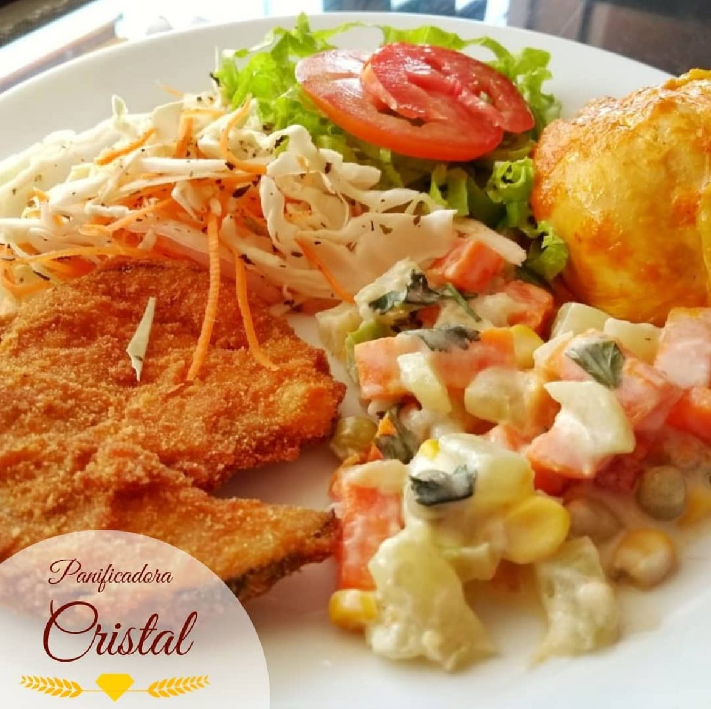

Pão francês
Crocante por fora, macio por dentro.
Desde 1998 · Alecrim, Natal
Panificadora Cristal. Padaria e restaurante no Alecrim, Natal.
Padaria e restaurante · Alecrim, Natal/RN
28 anos de forno aceso no Alecrim. Pão quentinho, bolo, sopa e almoço self-service.
A fornada
É assim desde 1998: massa no forno, casca estalando, e o pão sai quentinho para o balcão.
Cardápio
Escolha uma categoria. Preço e disponibilidade do dia no balcão ou pelo telefone.
Crocante por fora, macio por dentro.
O clássico do café, na chapa.
Massa fofinha, levemente doce.
Com grãos, para um lanche mais leve.
Metade chocolate com granulado, metade coco.
Para o café da tarde.
Sob encomenda, com recheio à sua escolha.
Doces da vitrine para depois do almoço.
Assados e fritos, para o lanche ou para levar.
Em cento, sob encomenda.
Sanduíches no pão da casa.
A mais elogiada pelos clientes.
Várias opções todos os dias.
Proteína, acompanhamentos e saladas no self-service.
Quentinha, para acompanhar o pão com manteiga.
Coado ou com leite.
Para o almoço e o lanche.
◆Itens com ◆ aparecem nas fotos da Cristal ou nas avaliações dos clientes. O cardápio completo será conferido com a padaria.
Almoço
“A melhor carne de sol do Alecrim.”
Cliente, no Foursquare
Almoço self-service com várias opções de salada, carne de sol e sopa. Perto de tudo no Alecrim.

Quem prova, comenta
858 avaliações no Google.
“Crocante e macio.”
“A sopa e o pão com manteiga são deliciosos.”
Encomendas
Chegou tarde e o pão acabou? Encomende antes e retire na hora certa.
Pão, bolo, salgados ou doces para a festa.
Pelo formulário abaixo ou pelo telefone (84) 3213-3695.
Na Rua Dr. Manoel Miranda, 719, no Alecrim.
Perguntas
Rua Dr. Manoel Miranda, 719, Alecrim, Natal/RN, CEP 59037-250. Abrir no mapa.
Tem. Almoço self-service com saladas, carne de sol e sopa.
Preencha o formulário desta página ou ligue para (84) 3213-3695 e combine o dia da retirada.
O horário atualizado fica no destaque “Horário” do Instagram da Cristal. Na dúvida, ligue antes.
Para não depender da sorte, encomende e retire na hora que combinar.
Fazer encomenda
O formulário monta a mensagem do pedido. Prefere falar? Ligue:
(84) 3213-3695Contato
Rua Dr. Manoel Miranda, 719
Alecrim, Natal/RN · CEP 59037-250